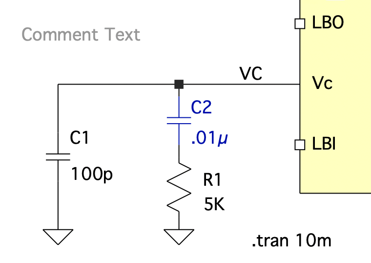

Making LTSpice pretty
SPICE
LTspice
Color theme
You can change the default color palette of LTSpice. The default one is very depressing. I use a black and white theme with waveforms color scheme from MATLAB.


Colors can be changed using GUI or by modifying the values in the config file.
| OS | path |
|---|---|
| macOS | ~/Library/Preferences/LTC.LTspice.plist |
| Windows | %USERPROFILE%\AppData\Roaming\LTspiceXVII.ini |
| Linux | ~/.wine/drive_c/users/$USER/Application\ Data/LTspiceXVII.ini |
macOS caveats
Do not try to edit the macOS .plist file as it is just a pretty-printed version of a binary file. johan162 made a color theme manager script to simplify theme changes on macOS. The script comes with a few themes. You can add your own theme to the ~/.ltspice_themes/themes.ltt list and set that as default. This is what I use:
[szymon]
GridColor=9868950
InActiveAxisColor=9868950
WaveColor0=16777215
WaveColor1=11513775
WaveColor2=11826975
WaveColor3=884479
WaveColor4=2859051
WaveColor5=2631381
WaveColor6=12412564
WaveColor7=4871819
WaveColor8=12744675
WaveColor9=8289918
WaveColor10=2211260
WaveColor11=13614615
WaveColor12=128
WaveColor13=44975
SchematicColor0=0
SchematicColor1=2631720
SchematicColor2=0
SchematicColor3=0
SchematicColor4=12648447
SchematicColor5=0
SchematicColor6=0
SchematicColor7=0
SchematicColor8=9868950
SchematicColor9=0
SchematicColor10=11210240
SchematicColor11=16777215
SchematicColor12=16777215
NetlistEditorColor0=0
NetlistEditorColor1=32512
NetlistEditorColor2=16711680
NetlistEditorColor3=155
NetlistEditorColor4=16777215